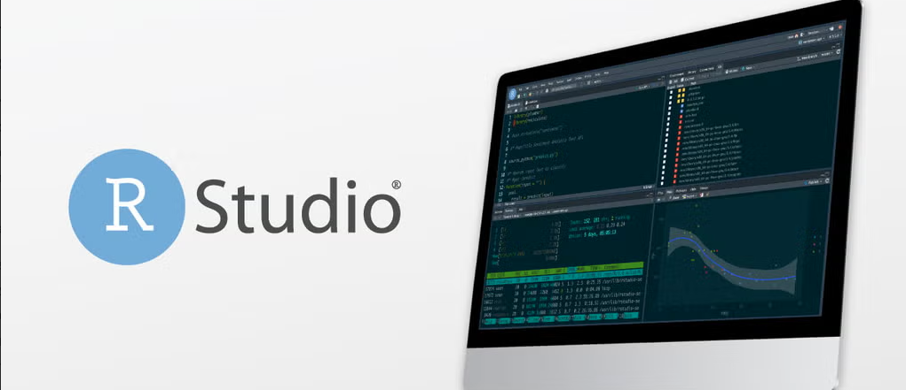
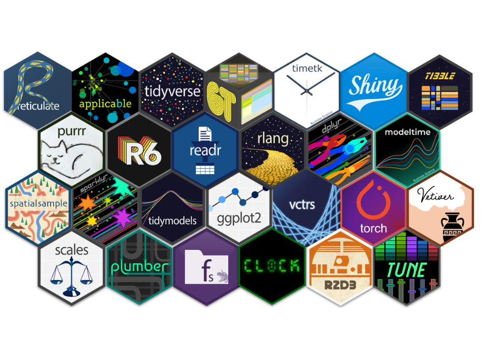
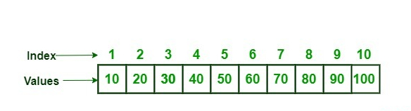
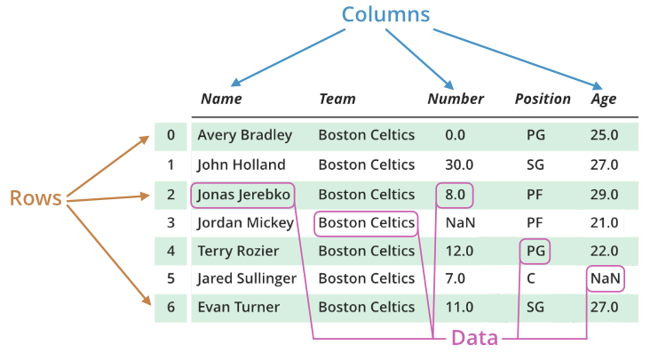
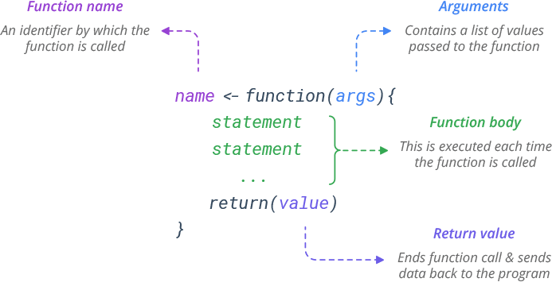

[1] "Hello, World!"# A tibble: 50 × 2
speed dist
<dbl> <dbl>
1 4 2
2 4 10
3 7 4
4 7 22
5 8 16
6 9 10
7 10 18
8 10 26
9 10 34
10 11 17
# ℹ 40 more rowsOspedale Del Cuore Fondazione Monasterio
2026-05-03



# Enter ORIGINAL values in levels
# Enter the NEW level labels in labels
# Make sure the orderings of levels and labels correspond
y <- factor(c("underweight", "underweight", "normal", "overweight", "normal"),
levels = c("underweight", "normal", "overweight"),
labels = c("Underweight", "Normal", "Overweight"))
levels(y)[1] "Underweight" "Normal" "Overweight" y <- "my dog"
z <- 1:10
x <- list("5", c(1,2,3), y, z) # I put y, an object we created earlier, in this list
x[[1]]
[1] "5"
[[2]]
[1] 1 2 3
[[3]]
[1] "my dog"
[[4]]
[1] 1 2 3 4 5 6 7 8 9 10x <- data.frame(outcome = c(1,0,1,1),
exposure = c("yes", "yes", "no", "no"),
age = c(24, 55, 39, 18))
x outcome exposure age
1 1 yes 24
2 0 yes 55
3 1 no 39
4 1 no 18
| Operator | Description |
|---|---|
+ |
addition |
- |
subtraction |
* |
multiplication |
/ |
division |
^ |
exponent |
%% |
modulus |
%/% |
integer division |
| Operator | Description |
|---|---|
< |
less |
> |
more |
== |
equal |
<= |
equal or less |
>= |
equal or more |
!= |
not equal |
| Operator | Description |
|---|---|
& |
and |
| |
or |
! |
logical not |
&& |
logical and |
|| |
logical or |
| Operator | Description |
|---|---|
<-, <<-, = |
left assignment |
->, ->> |
right assignment |

all software is open source